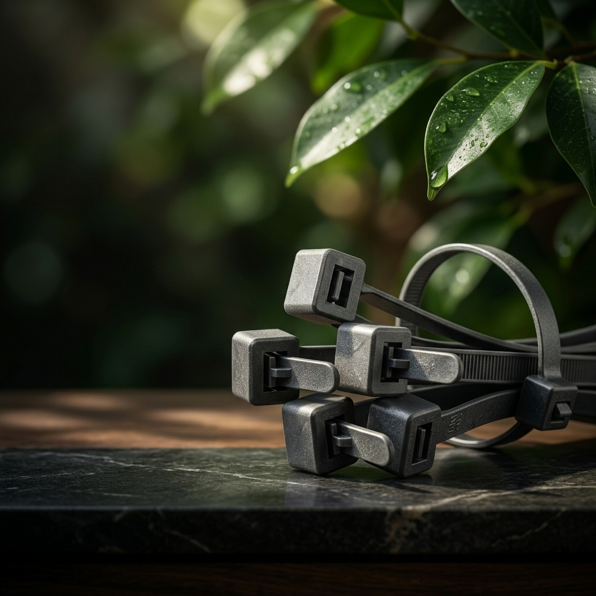
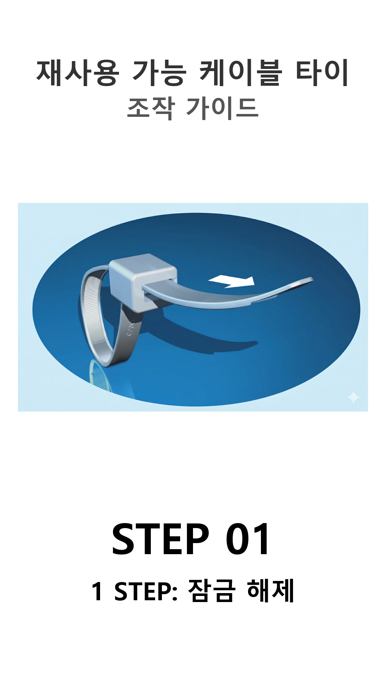
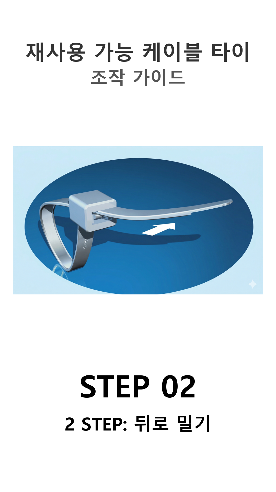
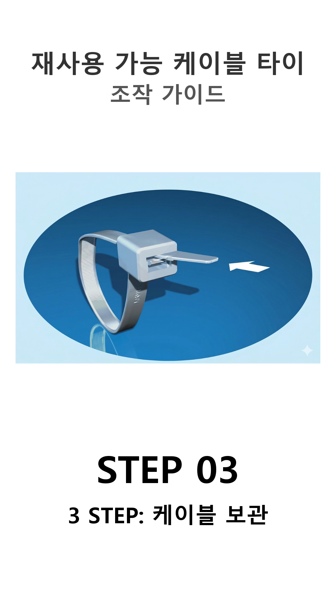

일회용의 가격,
그 이상의 강력함.
혁신적인 생산 기술로 '일회용 케이블타이와 동일한 가격'을 실현했습니다. 이제 비용 부담 없이 강력한 인장력과 100% 재사용 가능한 친환경 ESG 시대로 전환하세요.

0%
플라스틱 폐기물
100%
일회용과 동일한 가격
4세대
경사홈 특허 구조
기존 재사용 타이의 한계를 없애다
비싸고, 약하고, 엉성했던 기존 제품들. 테크포인트가 완벽하게 해결했습니다.
압도적 가격 경쟁력
기존 재사용 타이는 일회용보다 최대 수십 배 비쌌습니다. 테크포인트는 자체 양산 기술로 일회용과 동일한 수준의 판매가를 적용해 초기 도입 비용을 획기적으로 낮췄습니다.
나일론66 초강력 인장력
석유 기반 고품질 나일론 66 원자재를 사용하여, 재사용 제품의 고질적 결함이었던 '약한 고정력'을 일회용 타이 수준의 강한 인장력으로 끌어올렸습니다.
정밀한 조임과 락킹
기존 제품들은 톱니 산 간격이 넓어 정밀한 체결이 어려웠습니다. 테크포인트 제품은 촘촘한 간격과 우수한 스토퍼 구조로 단단하게 묶이며, 강한 진동에도 풀리지 않습니다.
완벽한 재사용을 위한 3단계 해지 매커니즘
니퍼 없이 손으로만 안전하게. 특허받은 경사홈 구조의 마법을 확인하세요.

타이 몸체 당기기
헤드의 결착 부분을 살짝 앞으로 당겨 틈을 만들어 줍니다.

측면 경사홈으로 이동
우측의 특수 설계된 경사홈 쪽으로 타이 몸체를 쓱 틀어줍니다.

안전한 분리 완수
결착 스토퍼가 해제된 상태에서 뒤로 가볍게 밀면 부드럽게 분리됩니다.
유지보수 산업의 게임 체인저
01. 에너지 절감형 매커니즘
측면 경사홈을 이용해 손으로 살짝 밀어 빼는 방식으로, 작업자의 피로도를 줄이고 니퍼에 의한 케이블 손상 및 안전 사고를 100% 예방합니다.
02. 글로벌 ESG 정책 대응
데이터센터, 자동차 정비 등 분산된 유지보수 현장에서 무심코 잘려 버려지던 막대한 미세 폐기물들을 원천 차단합니다.
03. 강력한 4세대 특허 보호
단순한 재사용이 아닌, 외부 충격과 비틀림에는 버티면서 사용자의 의도 시에만 간편히 해지되는 최원철 대표의 독점 기술로 전 세계 표준 장악을 목표로 합니다.